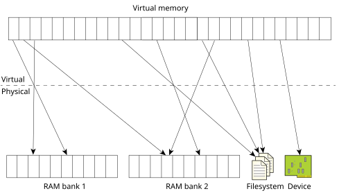
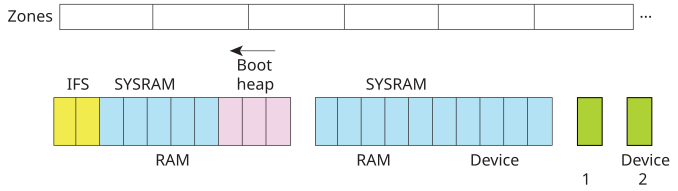

The virtual memory system implements the POSIX model for memory management along with some QNX OS extensions.
The memory manager's task is to create an abstraction of all components in the system that present themselves as physical memory devices. This abstraction allows the content of memory to come from anywhere in RAM, files in a filesystem, mapped device registers, and other types of memory such as read-only memory (ROM) or non-volatile memory (NVRAM). Virtual memory gives a per-process view of memory, which helps with safety and security, but also allows for shared memory objects and shared libraries.

The hardware that you run QNX OS on must have a Memory Management Unit (MMU). The MMU is turned on early in the startup sequence, before the kernel itself starts. Once the MMU has started, there are no direct references to physical memory; the MMU translates virtual addresses into physical ones. It's up to the memory manager to create the information for managing physical memory, including the mappings of virtual to physical addresses.
The MMU divides physical memory into fixed-size pieces called pages that are usually (but not always) 4 KB.
Some physical memory is used for the image filesystem (IFS), and the memory manager has a boot heap that it uses
to allocate the data structures that it needs.
System RAM (or sysram
) is the physical memory that the memory manager can allocate in response to
requests for memory.

A zone is a fixed-size, contiguous range of physical memory (currently 16 MB). The division of RAM into zones is intended to reduce fragmentation by having zones dedicated to specific allocation types.
Each process has its own virtual address space, which is a per-process view of virtual memory. This protects process address spaces from each other, preventing coding errors in a thread in one process from damaging memory used by threads in other processes or even in the OS. This protection is useful both for development and for the installed runtime system, because it makes postmortem analysis possible. Almost all OS services and drivers are independent processes.
A process's virtual address space is divided into regions, which are ranges of contiguous virtual addresses that refer to various pieces of memory. Maps associate virtual addresses with physical addresses, and include permissions. The mmap() function creates regions and the maps.
All memory regions are fully backed when they're created. The memory manager keeps track of how much memory is needed to back all allocated memory. The mmap() function fails if there isn't enough memory for it to reserve.
superlocked, meaning:
In this release, the MAP_LAZY flag is sliently ignored and has no effect on mapping behavior.